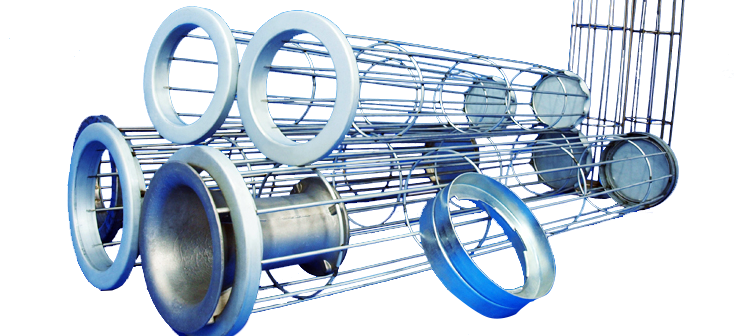
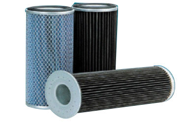
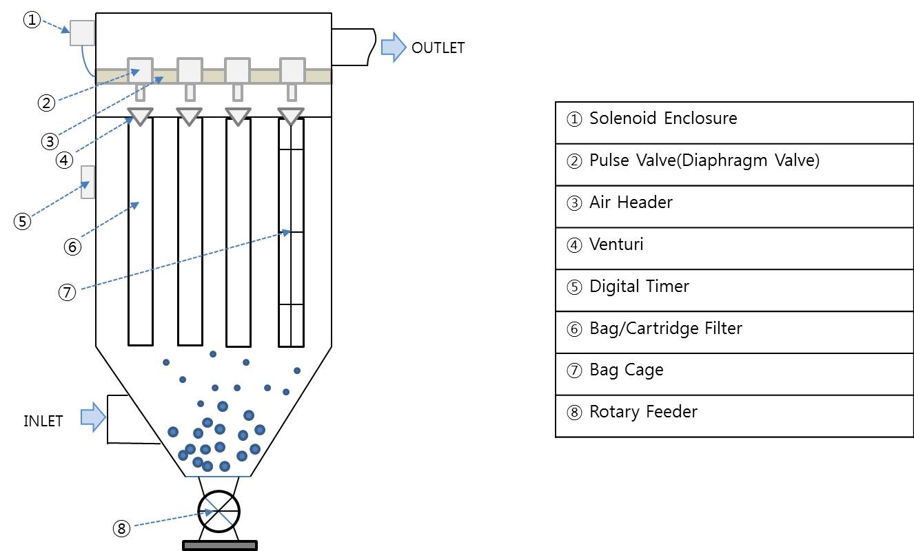

집진기 부품 / 필터 / 백케이지 / 벤츄리
필터 / 백케이지 / 벤츄리 Filter / Bag Cage / Venturi
집진기의 포집 효율과 탈진 성능을 극대화하는 백필터(Bag Filter), 백케이지(Bag Cage), 카트리지 필터(Cartridge Filter), 벤츄리(Venturi) 일체를 현장 규격에 맞춰 공급합니다.




1. 백필터 Bag Filter
- 니들 펀칭(Needle Punching) 원단 및 용접(Welding) 가공: 고품질 부직포 원단에 PE, PP, Ryton 등 소재별 열융착(Welding) 기술을 적용해 봉제 핀홀로 인한 미세 분진 누설을 방지합니다.
- 다양한 여재 및 맞춤 제작: 현장 분진 특성 및 운전 온도에 맞춰 폴리에스터, 노멕스(Nomex), 아크릴, 테프론(PTFE), 글라스파이버 등 원단 튜브 및 완제품 백필터를 주문 제작합니다.
| 재질 (Material) | 평량 / 사양 (Spec) | 직경 (Hole) | 길이 (Length) |
|---|---|---|---|
| PE / NOMEX / PTFE / PP / Ryton | 450 ~ 550 g/㎡ | Ø100 ~ Ø300 | 500 ~ 10,000 mm |
| GLASS / ANTISTATIC 등 | (주문제작 / 발수·발유·대전방지) |
- 상기 외 특수 규격(직경·길이) 및 상·하부 마감 형태(스냅밴드, 코드, 플랜지 등)는 도면이나 샘플에 맞춰 주문 제작 가능합니다.
2. 백케이지 Bag Cage
- 일괄 자동화 생산 설비: 전용 케이지 자동 성형 라인을 통해 균일한 용접 품질과 높은 진원도를 갖춘 표준 백케이지를 신속하게 공급합니다.
- 현장 환경별 재질 및 상부 타입 선택: 아연도금강(SS41), 스테인리스(SUS304 / SUS316) 등 내식성 재질과 벤츄리 일체형·분리형·분할형(2단/3단 조립식) 구조를 지원합니다.
| 상부 타입 (Type) | 재질 (Material) | 와이어 (Wire) | 길이 (Length) | 수직선 수 (No. of Wires) |
|---|---|---|---|---|
| SNAP (스냅형) FLANGE (벤츄리 일체형) BAND (밴드형) VENTURI (분리형 벤츄리) |
SUS304 SUS316 SS41 (아연도금) ETC |
Ø2.8 ~ Ø4.0 mm | 500 ~ 10,000 mm | 10 ~ 24선 |
- 상기 외 비표준 규격 및 분할형(다단 연결식) 백케이지 역시 주문 사양에 맞춰 제작합니다.
3. 카트리지 필터 Cartridge Filter
- 고효율 미세분진 포집: 일반 백필터 대비 넓은 여과 면적을 확보하여 미세 분진 포집 효율이 뛰어나며, 집진기 본체 크기를 콤팩트하게 설계할 수 있습니다.
- 간편한 유지보수 및 폭넓은 적용: 펄스 제트 역세척 성능이 우수하고 필터 교체가 간편해 레이저·플라즈마 절단, 용접 흄, 쇼트 블라스트, 분체 도장 및 식품·제약 분진 집진에 폭넓게 사용됩니다.
| 여재 (Media) | 폴리에스터(Polyester 260g/㎡), 셀룰로오스, 나노웹, 노멕스(Nomex), 대전방지·발수발유 코팅 |
|---|---|
| 여과 효율 / 내열 온도 | 여과 효율 99.9% (0.5㎛ 이상) · 연속 내열 온도 최대 135℃ (Nomex 적용 시 200℃) |
| 주요 용도 | 쇼트 블라스트, 레이저/플라즈마 절단, 용접 흄, 연마·분체·시멘트·식품 분진 |
카트리지 필터 주요 규격 및 모델 Cartridge Models
| 모델명 | 규격 (외경×길이 mm) | 여재 | 주요 적용 분진 | 내열 온도 |
|---|---|---|---|---|
| DCF-320 | Ø320 × 600 / 660 / 1000 / 1200 | POLYESTER 260g | 일반 산업 분진 (PLASMA / 일반) | 135℃ |
| DCF-350 | Ø350 × 660 / 900 / 1000 / 1200 | POLYESTER 260g | 쇼트 블라스트 / 연마 / 분체 분진 | 135℃ |
| DCF-440 | Ø440 × 660 / 1000 | NOMEX | 고온 분진 (PLASMA / 용접 흄) | 200℃ |
| DCF-450 | Ø450 × 1000 / 1200 / 1500 | POLYESTER 260g | 대풍량 집진 설비 일반 분진 | 135℃ |
- 상·하부 엔드캡 형태(오픈형, 클로즈드 볼트홀형, 플랜지형, 3-Lug/4-Lug 타입 등)는 별도 주문제작 가능합니다.
4. 벤츄리 Venturi
- 탈진 풍량 및 유속 증폭: 라발 노즐(De'Laval Nozzle) 유체 역학 설계를 적용해 펄스밸브에서 분사된 압축공기의 유속과 유입 공기를 2~7배까지 증폭시킵니다.
- 필터 하단까지 균일한 역세척: 기류 방향을 이상적으로 유도하여 백필터 최하단까지 분진을 효과적으로 털어내며, 높은 여과 속도(Air-to-Cloth Ratio) 설계를 가능하게 합니다.
- 현장 맞춤형 규격 공급: 집진기 백필터 및 백케이지 직경에 맞춰 다양한 규격의 벤츄리를 공급합니다.
견적·규격 문의 051-319-2332 · daehatw@daum.net